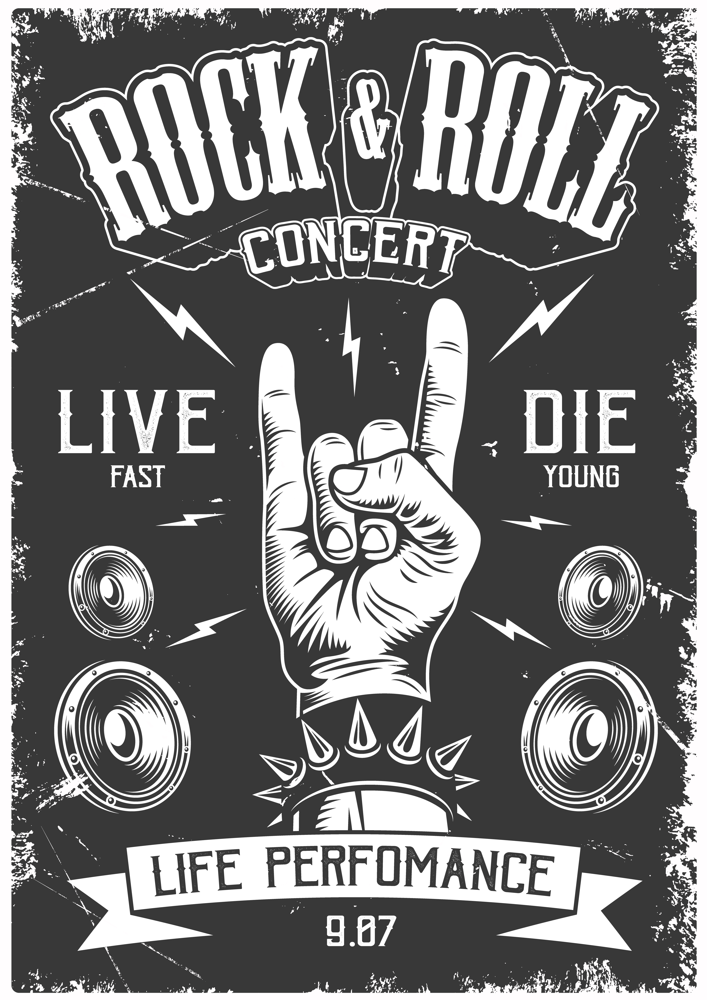
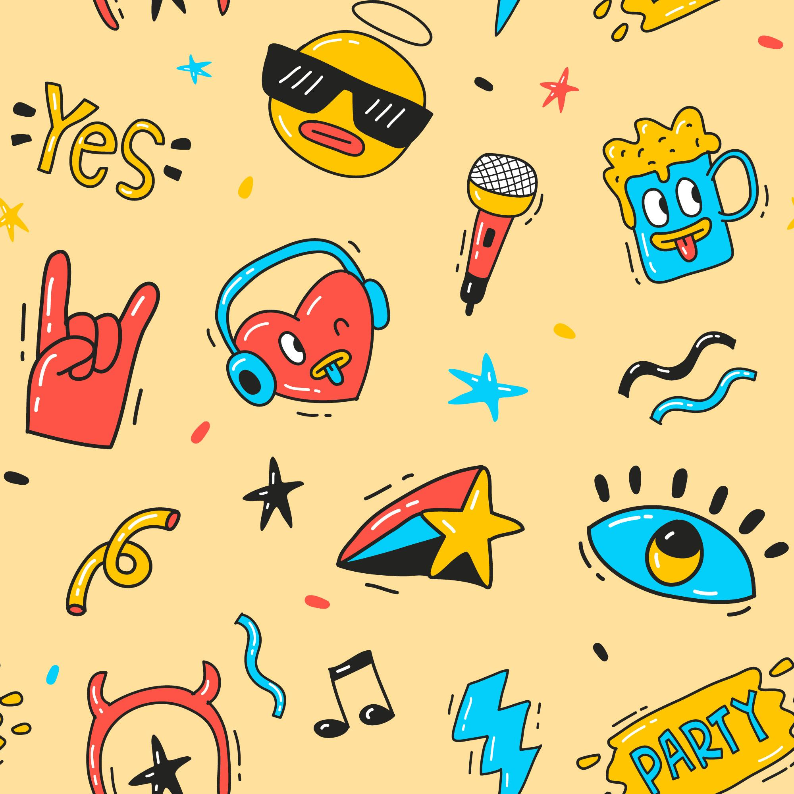

Rock
Rock music is powerful and energetic. It has been a significant part of my music journey.
Pop
Pop music is catchy and diverse. I enjoy the upbeat melodies and relatable lyrics.
Jazz
Jazz is soulful and improvisational. It brings a unique and soothing vibe to my music collection.